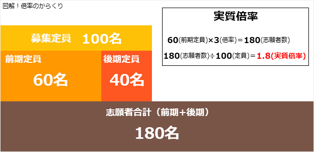

けっこう大変かもしれない最近の入試
私が働いている学習塾は千葉県にあり、私自身もまた地元千葉県の出身です。
しかし自分が中学生の頃と比べると、高校入試のシステムもかなり様変わりしています。
まず、昔の場合は私立高校も公立高校も一発勝負。
一つの高校につき、基本的に受験の機会は一度きり。まさにワンチャンスでした。
ところが今の千葉県の入試事情は違っていて、前期・後期と分かれていて、少なくとも２回、場合によっては同一校を３回受験できる場合もあるんです。
これは私立だけでなく公立高校も同じです。
要は、１回目の試験で落ちてしまっても、まだチャンスがあるということ。
これは一見すると悪くないように思えますが、受験生にしてみれば全部で４校ほど受験しようと思ったら、できるだけチャンスを増やしたいですから受けられるだけ受けようとしますよね。
そうすると、４校にチャレンジするのに、計８回ほど受験することもあるわけです。
これはかなり精神的・体力的な負担になるでしょう。
特に難関校の場合、複数回受験しても結局不合格だったりすることも珍しくないですから、受験生のショックたるや…。
でもまあ、皆同じ条件ですし、なんとか頑張るしかないわけです。
倍率も捉え方次第
今年も新聞で千葉県立前期の倍率が発表されました。
最上位校になると倍率は３倍ほど。
これを見て生徒は「高い…！」と絶句するわけです。
たしかに、３倍と言えば３人に１人しか受からない。
厳しいイメージがあるわけです。
ただし、受験生諸君は少しよく考えてみてほしい。
この倍率は前期の定員に対してのものなのですよ。
千葉県立において前期で合格するのは定員の６割ほどです。
わかりやすくするために、その高校の定員を１００人としてみましょう。
つまり下図のようになるわけです。

よく見てみましょう。最終的に合格できる人数が１００人で、その６割である６０人が前期の定員です。
これに対して志望者が３倍の１８０人。もし前期の不合格者がそのまま後期を受験すると考えた場合、トータルで考えると１８０人中１００人合格するわけですから、実質は1.8倍しかないわけです。
ちなみに後期については、不合格になった１２０人が残った４０の枠を後期で争うので、やはり３倍です。
しかし後期の場合は、言い方が悪いかもしれませんが‘敗者復活戦’です。受かって当然の実力がある人は前期で合格しています。そういう意味では同じ３倍でも前期より可能性は高まります。さらに最上位校であれば後期の段階で志望校を変更して安全策をとる人もいますから、より戦いやすくなるはずです。
ということで、何が言いたいかというとですね、倍率の数字だけを見て絶望するのはイカンということ。
「もうダメだ」と悲観しながら受けるか、「まあ実質は1.8倍だから、やれるだけやってみるか」と開き直って受けるか。
要は捉え方です。
もちろん、受験の世界は倍率が何倍であろうと、受かるべき人が受かる。本当はそれだけです。
そう言うと身もフタもないかもしれませんが、どっちに転んでもおかしくない状況で力が発揮できる人と萎縮してしまう人の違いは、こういった精神的な部分の影響──いかに自分をよい意味で騙し、納得させるか──が結構大きいものなんです。
わらにもすがる思いで勉強している受験生の保護者の方、一言冷静に今のような話をしてあげてみてはどうでしょうか。
※また、受験つらいよ！と、くさっている場合は、「塾の先生は毎年受験と戦っているのよ！」という逆ギレ説得も好評ですのでよろしくお願いします（笑）。